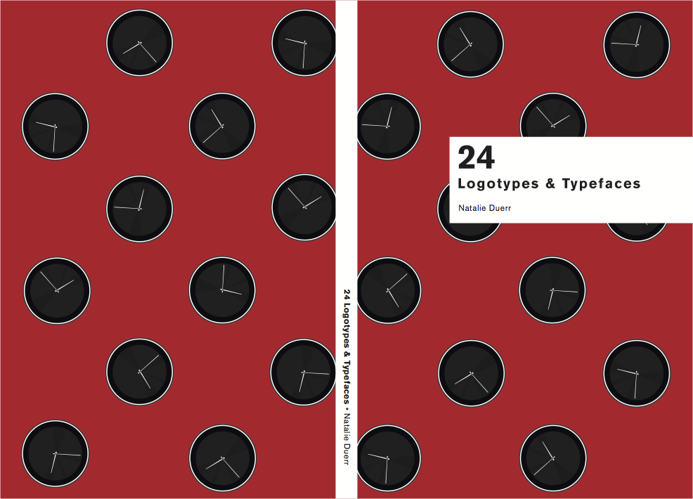

Typography book about popular typefaces.
In Typography 1, we were instructed to design and create a book that would showcase 24 popular typefaces. We were given a layout by our professor, however, there were several aspects of the initial file that I changed to perfect my book. This included properly setting up page numbers through InDesign and changing the grid. I chose clocks as my theme since they feature both letters and numbers to showcase that font in. Each clock was created in Illustrator and then stragecially placed on its respective page. The colck theme also gave me the oppurtunity to play with color schemes and placement on the pages. My goal was to create an illustration that you couldn't predict.

Cover, Adobe Illustrator and InDesign
When I was designing the cover, I wanted to show off the clocks, but also the fact that even though you couldn't predict where the clock was going to be or its colors, it was still the same clock. In the end, I came up with this red and black cover, that sort of looks like a ladybug. Looking back it isn't a bad cover in general, but doesn't really relate to my book's content and theme. I could have shown off multiple clocks to emphasis the colors or even placed them more randomly.
Below is a PDF version of my book along with some pictures of the printed version...


When I was designing the cover, I wanted to show off the clocks, but also the fact that even though you couldn't predict where the clock was going to be or its colors, it was still the same clock. In the end, I came up with this red and black cover, that sort of looks like a ladybug. Looking back it isn't a bad cover in general, but doesn't really relate to my book's content and theme. I could have shown off multiple clocks to emphasis the colors or even placed them more randomly.
Below is a PDF version of my book along with some pictures of the printed version...